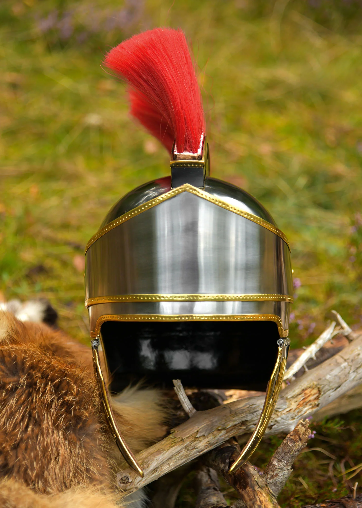

SERVIZI
OBBIETTIVI
Creativita: creare un prodotto utile per i ragazzi come Ye Micheal.
Fullgratis: creare prodotti gratis per Ye.
Fedeli:fedelta alla storia e alla vita di ye.
Storia
il nostro sito si è sviluppato nel 67 a.c durante il periodo del budul sotto l'impero di ye Micheal, passato alla storia con il nome di micsele ye.
Arma
l'arma di ye Micheal rappresenta il servizio principale che offriamo ai nostri clienti, capace di protegere il cliente da ogni attacco di bogatu.
Reliquie Sacre
Fonte di potere di Ye Micheal rappresentano una assistenza h24 per i clienti
Cerchietto di Logos
Calice di Eonothem
Sabbies di Eon
Fiore della vita

Pennacchio della Morte